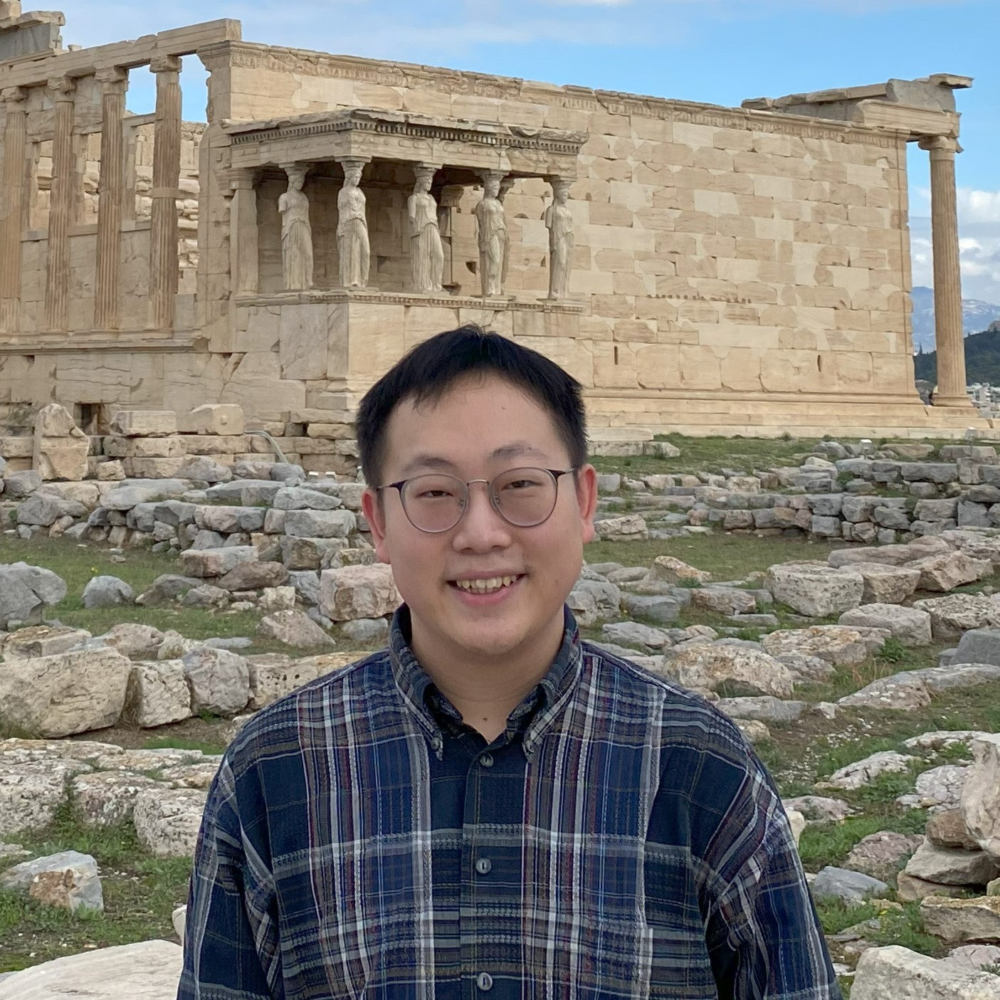

Yupeng He
Ph.D. Candidate · IE Business School, IE University · Madrid, Spain
I study how people navigate work conflict, negotiation, and prosocial behavior in organizations. Supervised by Prof. Kriti Jain.
Recent Updates
Jul 2026
Presented at IACM Annual Conference, Vienna, Austria
Jun 2026
Presented at EURAM Annual Conference, Kristiansand, Norway
May 2026
Attended Madrid Work & Organizations Workshop, Madrid, Spain
Jul 2025
Presented at AOM Annual Meeting, Copenhagen, Denmark
Working Papers
Role Conflict and Holistic Thinking target: JOB
Self–Other Miscalibration in Sponsorship Perceptions data collection
Work Conflict and Perfectionism theory dev
Upcoming Presentations